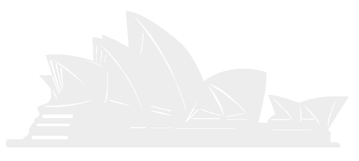
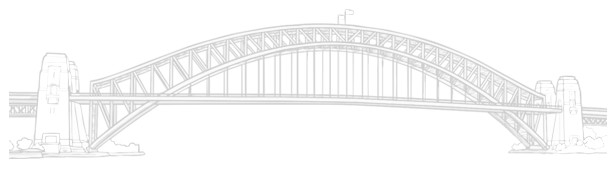

a b o u t
I'm Yu-Ping Tseng, or you can call me Amelia. Born and raised in Taipei, Taiwan. I had an ordinary childhood as most of the others, yet my life after seventeen is adventurous and full of ebbs and flows that one could ever imagine. I’ll first puzzle you with the fact that as a junior in college, I spent the past three academic years in three universities in three different countries. How riveting!
My passion for English was evoked by my childhood in bilingual kindergarten, which led me down to my pursuit of English especially in literature. I went to the Education University of Hong Kong after high school, double-majoring in English and Education. The life there offered me a spectacle to the world; to expand it, I went to Australia for exchange in sophomore year, during which I experienced traveling alone, socializing with people from different nationalities, etc.
My study life was such a thrill that not only bridges me to the world but renders me to become a more gregarious, adaptable, flexible and broaden-minded person. Now, drifting back along with the pandemic wave, I am starting a new chapter as a junior of DFLL in NTHU! While mastering in English, I also take up fascinating challenges in exercise science, computer programming, global politics and economics courses to equip myself with various fields of knowledge and abilities. To advance myself, I plan to do master’s degree in Australia; the specific field of study will yet be my mission to explore in NTHU!
關
於
我
我是曾郁評，土生土長的台北人! 我的童年很平凡，但十七歲之後的人生卻充滿冒險和波折。首先，讓我用簡短的求學經歷來自我介紹！我目前就讀大三，但過去三年的期間內卻就讀了三所位於不同國家的大學，體驗了各式各樣的生活。我之所以會選擇外語系主要是因為小時候就讀的雙語幼稚園，這雖然只佔據我一小部分的童年，卻大大的激發了我對英文的熱情，也引領了我在外語系的求學之路，特別是文學領域。因此，高中畢業後，我便前往香港教育大學雙修英文及教育，這一年多的期間內我接觸到了許多來自不同國家的朋友，在這個國際化的城市裡拓展了我的眼界。大二後，我更進一步透過學校提供的機會，申請至澳洲交換，再次跳脫已熟悉的舒適圈，挑戰當背包客遊走澳洲、與各國人交流等等。
我在台灣、香港、澳洲的求學歷程不僅使我與世界接軌，也讓我變得善於交際、能迅速地適應各個不同的環境，因此擁有更加宏觀的國際視野。如今，由於疫情的影響，我回到了台灣，轉學至清華大學外語系，開啟人生另一段新的求學之路！作為清大新生的這些日子，我除了精進英文外，更突破舒適圈去修習不同領域的課程，例如：運動科學、程式設計和全球政治經濟學。至於未來，我的目標是前往澳洲進修研究所，而確切的規劃將會是我在清大待探索的任務。